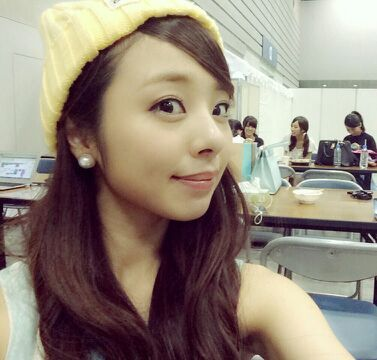
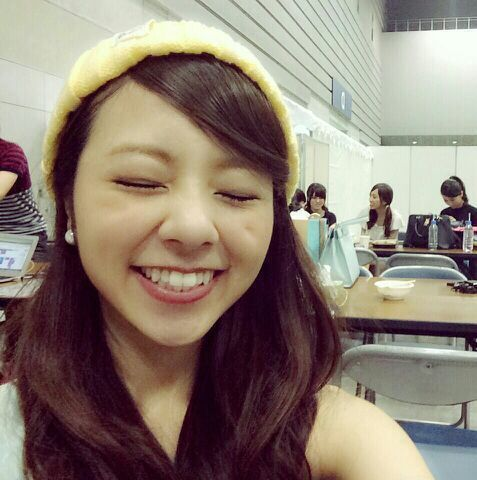

| 2014/07 26 Sat | ===アンダーライブ=== \ ろってぃ− / |
おはよーございます
 ろってぃ−だよ〜..*
ろってぃ−だよ〜..*

今日はアンダーライブ 最終日 \ ☆ /
昨日も、渋谷の方までliveに来てくださった皆様、本当にありがとうございました ！
今日は 昼・夜と ２回公演ありやす ！
最終日、絶対に 悔いの残らない、全力で、精一杯、盛り上がって楽しんでいきたいと思います ！！！
よろしくお願い致します\(*´▽`*)/
ろってぃ−引っ張っていきますよ〜！！
困った時は「永さーーん＼(>▽<)／ 」と叫ぶよ. あは。

昨日、若月と真夏が仕事終わりに来てくれました.♪
ありがと〜う ///
もっとゆっくり話したかったんだけど、
楽屋ではゆっくりしてる暇なくて、
終わってから 少しだけ 「正直、見ててどう思った？」ってことを質問した位。
また 見てくれたメンバーと話したいです..*
私も MC等、あおり、パフォーマンスで引っ張って行かなきゃならないので、 自分自身も後輩たちのことも成長させて、頑張って行きたいと思います！
今日も1日頑張りましょう ！！！
\☆/ のし

ろってぃ−
コメント(180)
2014/07/26 10:36